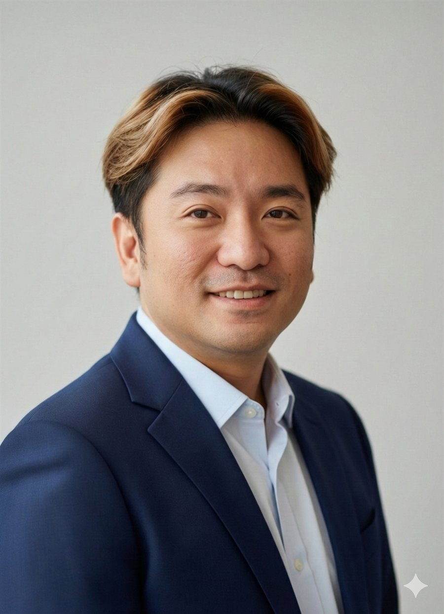

Regional Business Development leadership fused with engineering-grade AI automation — bridging C-suite commercial strategy and the kind of Python & agentic tooling that actually ships.

An aerospace-trained commercial leader who codes — pairing revenue accountability across Southeast Asia with top-1% applied AI tooling.
14+ years of regional Business Development across five companies and markets spanning Southeast Asia, Hong Kong, LATAM and Canada — revenue growth, distributor management, and market relaunch.
At Singapore's Ministry of Health, led a team of four delivering Python, Power BI and GenAI dashboards across 30+ agencies during the COVID-19 response — work recognised with the National Commendation Medal.
Now deploying Claude Code, Codex and agentic workflows to automate complex business operations. MBA from SMU (4.0 GPA), NTU Aerospace Engineering foundation, and a Divemaster's calm under pressure.
Two interactive dashboards built for Director-level commercial work — showing how AI transforms how a function operates.
Not a software engineer — a BD leader who builds with AI, hands on the keyboard.
The Python foundation is real and pre-dates the GenAI era: at MOH I wrote, inherited and improved 30+ production data workflows when Excel and Power BI alone could no longer move millions of data points.
Today I orchestrate Claude Code, Codex, ChatGPT, NotebookLM, Perplexity, OpenClaw & Hermes — plus local LLMs self-hosted on a Mac mini — to code, prototype apps, extract documents, and run commercial research at speed.
The edge isn't engineering depth. It's the bridge — translating platform capability into partner adoption, customer value and commercial growth.
⌁ This page is self-hosted on a Mac mini and served through a Cloudflare tunnel — the AI-and-automation habit, running in the open.
Proof over claims — the systems and artifacts behind the numbers.
You're looking at the proof. This site was designed and coded with Claude Code, then self-hosted on a Mac mini and served to the world through a Cloudflare tunnel — a single hand-built file, no page builder, no framework.
Turns chaotic raw video into a usable chronological record.
Makes poor footage forensically useful — clarity where there was none.
Rebuilds what happened from geometry — aerospace analytical mindset applied.
Compresses weeks of reading into hours — extracts signal from noise.
Turns a messy haystack into a queryable, reliable evidence base.
Full AI power on private data — nothing leaves the machine.
Every system below maps to an enterprise BD operation — built by a domain expert directing AI, not by a career engineer.
Sectors: Semiconductor (49) · Consumer Electronics (24) · SaaS (24) · Consumer Goods (20) · Consulting (16) · Data Analytics (16) · Financial Services (10)
Every manual BD process has a systems-shaped solution. These are the ones I've already built and run.
Formal grounding in business analytics, corporate finance, strategic management and stakeholder decision-making. Included a full-time exchange at Nagoya University of Commerce & Business, Japan.
Simulation concepts, thermodynamics, fluid systems and physics-based modelling — transferable grounding for systems thinking and operational analytics.
English & Mandarin — native / fluent. Elected Internal Auditor, Mensa Singapore. Interests: scuba (Divemaster), skiing, vipassana, hiking, singing.